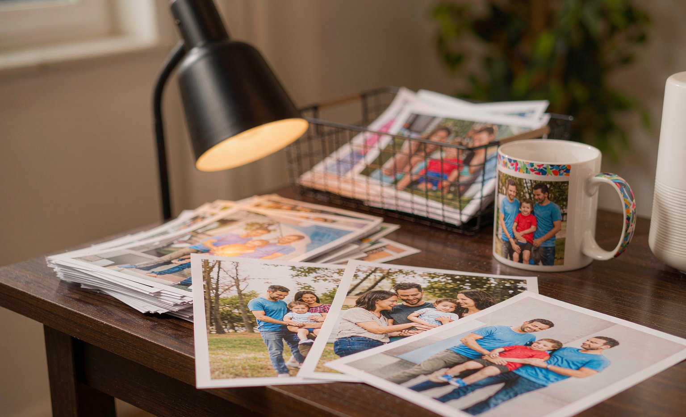

Can You Print That Photo? Copyright and Consent Rules for Custom Gifts
Short answer: photos you took yourself, or that family members took and share freely, are almost always fine to print on custom gifts, while professional studio portraits and downloaded images usually require permission from the copyright holder.
Bottom line: beyond copyright, run the consent check: ask before printing recognizable people who are not close family, and never print images of children who are not yours or your close relatives'.

Every custom gift shop gets the same two questions: can I print this photo legally, and should I? The legal side follows copyright rules, and the should side is about consent and kindness. Here is the practical version of both, written for people ordering gifts, not lawyers.
The Copyright Side, Practically
You own the copyright to photos you took yourself, so your vacation shots, pet photos, and family snapshots are safe to print. Photos taken by family or friends are owned by them, but for a personal gift, their informal permission is enough in practice; a text message saying go ahead settles it. Professional studio portraits are different: the photographer owns the copyright even if you paid for the session and hold physical prints, so you need their written release, which most will grant on request. Downloaded images, movie stills, artist work, and anything pulled from search engines are the zone of trouble: they are someone's property, and shops can and do refuse them.
The Consent Side
Copyright tells you what you may print; consent tells you what you should. A candid photo of a friend on a gag mug is usually fine between close friends and can land badly beyond that circle. Recognizable adults who are not close to the recipient deserve a quick heads-up. Children who are not yours or your close relatives' should not appear on gifts at all, both as etiquette and because of how shops handle minors' images. When a photo involves an ex-partner, a deceased person's family, or a private moment, the kindness question answers itself: ask the people involved first.
How Shops Handle Problem Photos
Most custom printers, including us, review flagged uploads and will decline images that clearly belong to someone else, depict minors without an apparent family connection, or contain trademarks. Refusals at the proof stage are annoying; refusals mid-production lose your deadline. The five-minute permission check before uploading is cheaper than either.
Photo Types and Printing Rules
| Photo source | Legal to print? | What to do |
|---|---|---|
| Your own photos | Yes | Print freely |
| Family or friend snapshots | Practically yes | Get a quick text OK |
| Professional portraits | Photographer owns copyright | Request a print release |
| Downloaded / artist images | No | Choose a different photo |
| Other people's children | Not for gifts | Do not use |
Frequently Asked Questions
Can I print a professional photo on a custom gift?
Only with the photographer's permission. They own the copyright even if you bought the session and hold the prints, but most photographers grant a print release for personal gifts on request.
Can I print a photo of my friend on a custom mug?
Legally yes if you took the photo yourself, and practically yes for close friends. For acquaintances or coworkers, a quick consent check first is the kind choice, since candid gifts can land badly outside close circles.
Why did the print shop reject my uploaded image?
Shops decline images that clearly belong to someone else, show minors without an apparent family connection, or contain trademarks. Getting permission before uploading avoids a lost deadline.